PaynEat ERP · โอเพนซอร์ส
จากซัพพลายเออร์ถึงจานทุก lot ตรวจสอบได้
ระบบหลังบ้านสำหรับเชนร้านอาหารที่ดูแลซัพพลายเชนเอง สร้างแบบเปิดเผยต่อสาธารณะ เริ่มจากสิ่งที่ทุกอย่างต้องพึ่ง: ตัวเลขสต๊อกที่เชื่อได้
ระยะโครงระบบ: บัญชีเคลื่อนไหวสต๊อก master data และสิทธิ์การใช้งานใช้ได้แล้ววันนี้ งานจัดซื้อ การผลิต และการโอนตามมาถัดไป
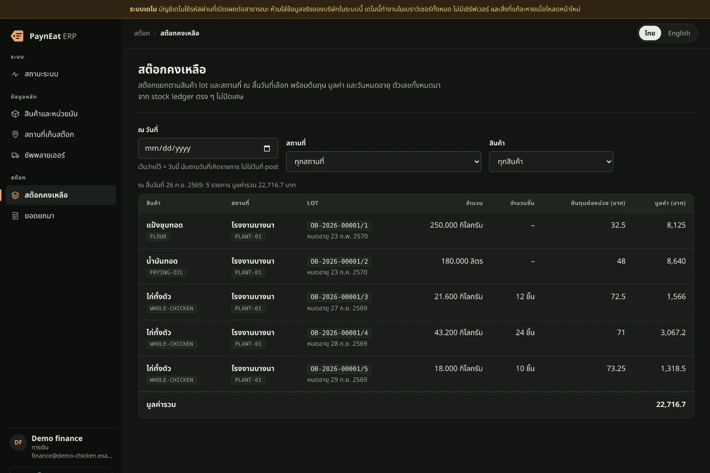
ทำไมต้อง PaynEat ERP
ออกแบบมาเพื่อปัญหาที่เชนกำลังโตเจอจริง
ทุกคำตอบด้านล่างใช้ได้แล้ววันนี้บนเดโมสาธารณะ ทุกภาพคือ console จริงบนข้อมูลเชนสมมติ
บัญชีเคลื่อนไหวสต๊อก
ตัวเลขสต๊อกที่ทุกคนเชื่อ
สเปรดชีตถูกเขียนทับ โรงงานกับสาขาตัวเลขไม่เคยตรงกัน และไม่มีใครบอกได้ว่าวันอังคารที่แล้วสต๊อกมีเท่าไร
ทุกการเคลื่อนไหวเป็นรายการเคลื่อนไหวที่ไม่มีใครแก้ได้ ฐานข้อมูลเองก็ปฏิเสธ ความผิดพลาดแก้ด้วยเอกสารกลับรายการที่อยู่คู่กับต้นฉบับ สต๊อกคงเหลือดูได้ ณ วันที่เกิดรายการใดก็ได้ พร้อมต้นทุนและมูลค่าของทุก lot เป็นทศนิยมแม่นยำ
- เพิ่มได้อย่างเดียวรายการเคลื่อนไหวไม่ถูกแก้หรือลบเลย
- ณ วันใดก็ได้นับตามวันที่เกิดรายการ ไม่ใช่วันที่พิมพ์เข้าระบบ
- แม่นยำทศนิยมจริง ไม่ใช่ floating point: 22,716.7 บาท คือ 22,716.7
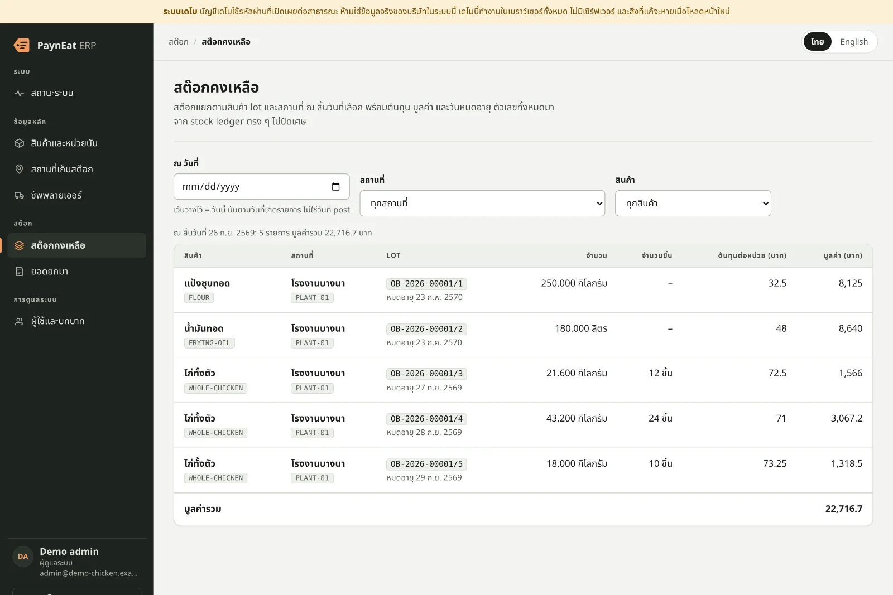
ลองเอง: เปิด “สต๊อกคงเหลือ” แล้วตั้ง “ณ วันที่” เป็นสองวันก่อน เปิดเดโม
ยอดยกมา
เริ่มใช้ระบบโดยไม่ต้องวุ่นกับสเปรดชีต
วันแรกของระบบใหม่คือวันที่ข้อมูลผิดเข้ามา: น่องไก่ครึ่งชิ้น lot ที่หมดอายุไปแล้ว ตัวเลขที่พิมพ์ซ้ำ
ยอดยกมาเป็นร่างจนกว่าจะ post และถูกตรวจทีละบรรทัดก่อน การ post เปลี่ยนทุกบรรทัดเป็น lot ในธุรกรรมเดียว หรือไม่เปลี่ยนเลยสักบรรทัด เอกสารที่ post แล้วถือเป็นที่สุด ทางเดียวที่ย้อนได้คือเอกสารกลับรายการพร้อมเหตุผล
- ตรวจทีละบรรทัดชิ้นไม่มีทศนิยม lot ที่หมดอายุแล้วถูกปฏิเสธ
- ได้ทั้งหมดหรือไม่ได้เลยทุกบรรทัดเป็น lot ในธุรกรรมเดียว
- ย้อนรอยได้ตั้งแต่วันแรกOB-2026-00002 และ lot ของมัน /1, /2
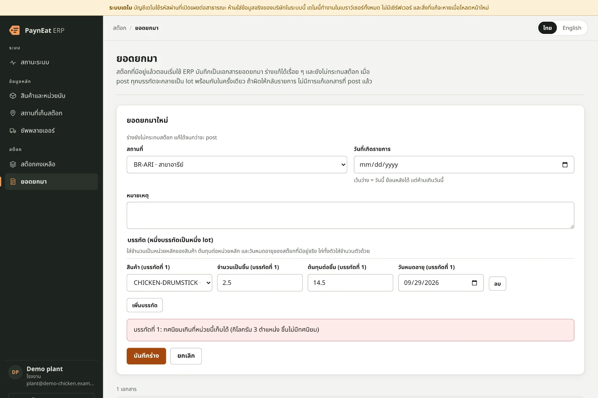
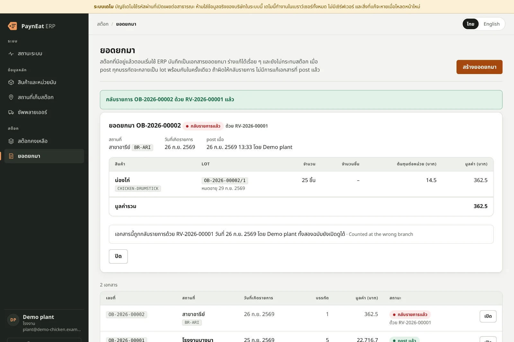
ลองเอง: เข้าสู่ระบบเป็น plant กด “สร้างยอดยกมา” แล้วใส่น่องไก่ 2.5 ชิ้น เปิดเดโม
Master data
master data ชุดเดียว ทุกสาขา ทุกระบบ
แต่ละสาขาเรียกไก่ตัวเดียวกันคนละชื่อ ซัพพลายเออร์ขายเป็นถุง ครัวนับเป็นชิ้น และ POS ก็มีรายการของตัวเอง
สินค้ามีหน่วยหลักหน่วยเดียวและหน่วยซื้อที่แปลงได้แม่นยำ 1 ถุง = 25 กิโลกรัม ไก่ทั้งตัวเก็บทั้งน้ำหนักและจำนวนตัว รหัสสถานที่ใช้ร่วมกับ PaynEat POS และ Cwork และตายตัวเมื่อถูกใช้แล้ว ทุกการเปลี่ยนแปลงเป็นเวอร์ชัน master data ที่มีเลขให้ POS ดึงไป เลขประจำตัวผู้เสียภาษีของซัพพลายเออร์ถูกตรวจด้วยหลักตรวจสอบ
- แปลงหน่วยแม่นยำตัวคูณมากกว่าศูนย์เสมอ หน่วยหลักไม่เปลี่ยน
- มีเวอร์ชันให้ POSทุกการเปลี่ยนเป็นเวอร์ชันถัดไป เรียงลำดับ ไม่มีช่องว่าง
- จับได้ตั้งแต่ตอนกรอกเลขผู้เสียภาษีที่พิมพ์ผิดไม่ผ่านหลักตรวจสอบ
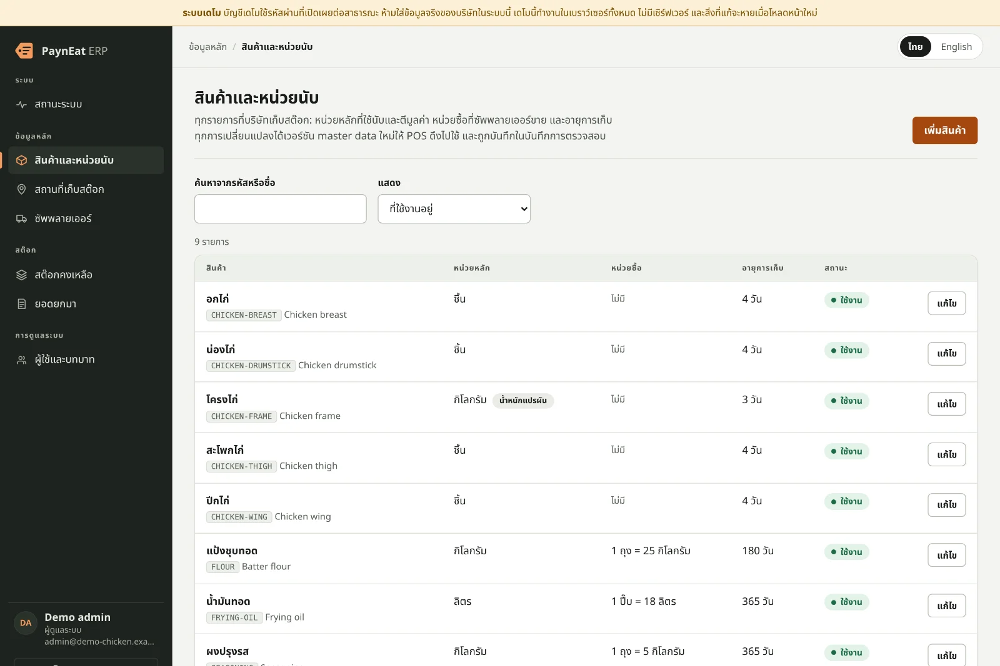
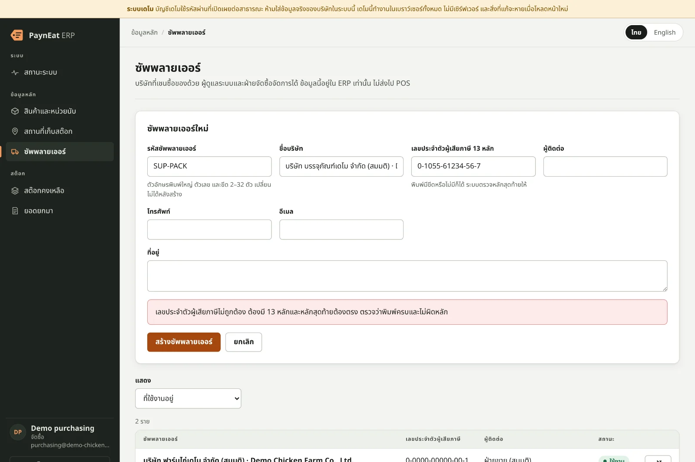
ลองเอง: เข้าสู่ระบบเป็น purchasing กด “เพิ่มซัพพลายเออร์” แล้วพิมพ์เลขผู้เสียภาษีผิดหนึ่งหลัก เปิดเดโม
สิทธิ์และการตรวจสอบ
คนที่ใช่ และเฉพาะคนที่ใช่
ทุกคนใช้บัญชีเดียวกัน ใครจะแก้อะไรก็ได้ และเมื่อมีอะไรผิดพลาดก็ไม่มีบันทึกว่าใครทำ
เจ็ดบทบาทที่ API บังคับจริง ไม่ใช่แค่ซ่อนปุ่ม ผู้ดูแลระบบเข้าสู่ระบบด้วยการยืนยันตัวตนขั้นที่สองและรหัสกู้คืนที่ใช้ได้ครั้งเดียว ผิดห้าครั้งติดล็อกบัญชี 15 นาที และผู้ดูแลระบบคนสุดท้ายยังคงบทบาทไว้เสมอ ทุกการเปลี่ยนแปลงและทุกการเข้าสู่ระบบที่ถูกปฏิเสธลงบันทึกการตรวจสอบแบบเพิ่มได้อย่างเดียว พร้อมผู้ทำ เวลา และ correlation id ของคำขอ
- เจ็ดบทบาทตั้งแต่จัดซื้อถึงการเงิน ผู้ใช้หนึ่งคนมีได้หลายบทบาท
- การยืนยันตัวตนขั้นที่สองรหัสจากแอป authenticator สำหรับผู้ดูแลระบบ พร้อมรหัสกู้คืน
- การแยกหน้าที่ไม่มีใครอนุมัติเอกสารที่ตัวเองสร้าง มาพร้อมการอนุมัติครั้งแรกวางแผนไว้ · #8
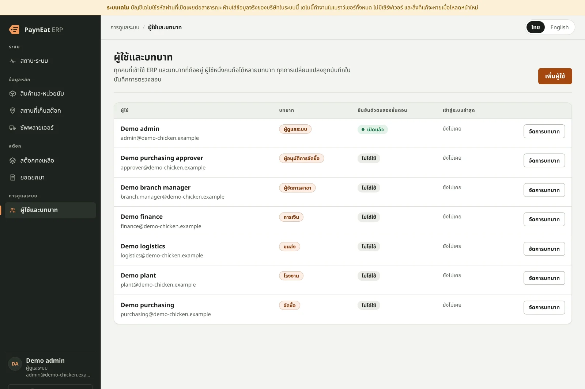
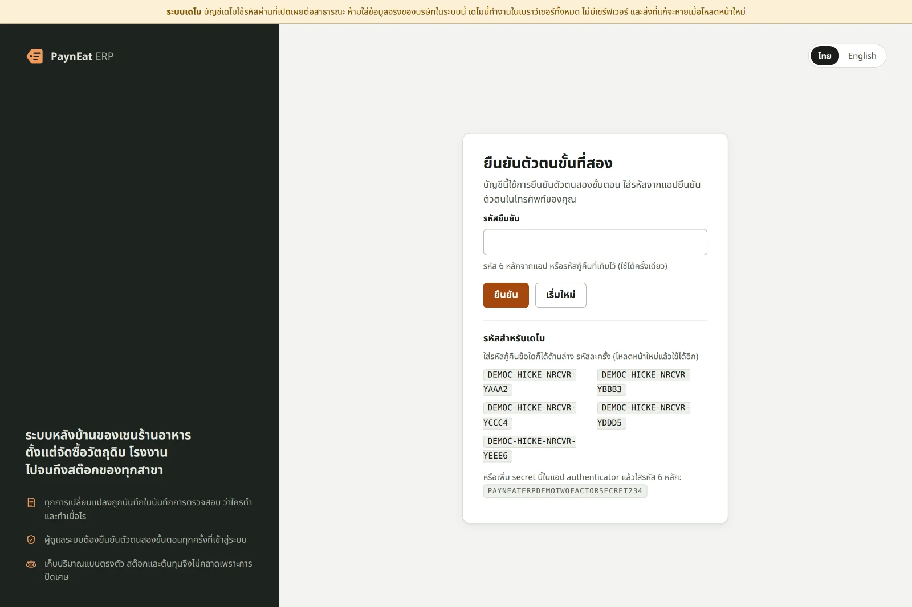
ลองเอง: เข้าสู่ระบบเป็น admin ด้วยรหัสกู้คืนที่หน้าเข้าสู่ระบบแสดงไว้ แล้วเปิด “ผู้ใช้และบทบาท” เปิดเดโม
การสังเกตระบบ
เมื่อมีอะไรพัง คุณจะรู้ว่าเพราะอะไร
“ระบบช้า” แล้วไม่มีใครหาคำขอที่ล้มเหลวเจอสักรายการ
console ถาม API และฐานข้อมูลว่ายังปกติไหม และถ้าตัวใดไม่ปกติ จะแสดง correlation id ของการตรวจครั้งนั้น ซึ่งเป็น id เดียวกับบรรทัด log ของ API ทุกคำขอเป็น log JSON หนึ่งบรรทัดตามสัญญา telemetry ของระบบนิเวศ และ metric ของ Prometheus นับคำขอ การเข้าสู่ระบบที่ถูกปฏิเสธ และการ post อีเมล รหัสผ่าน และรหัสยืนยันไม่เคยเข้า log
- เห็นสุขภาพระบบทันทีAPI และฐานข้อมูล ตรวจได้เมื่อต้องการ
- id เดียวตลอดทางid บนจอคือ id ใน log
- มี metric ในตัวคำขอ การเข้าสู่ระบบที่ถูกปฏิเสธ การ post แยกตามประเภทเอกสาร
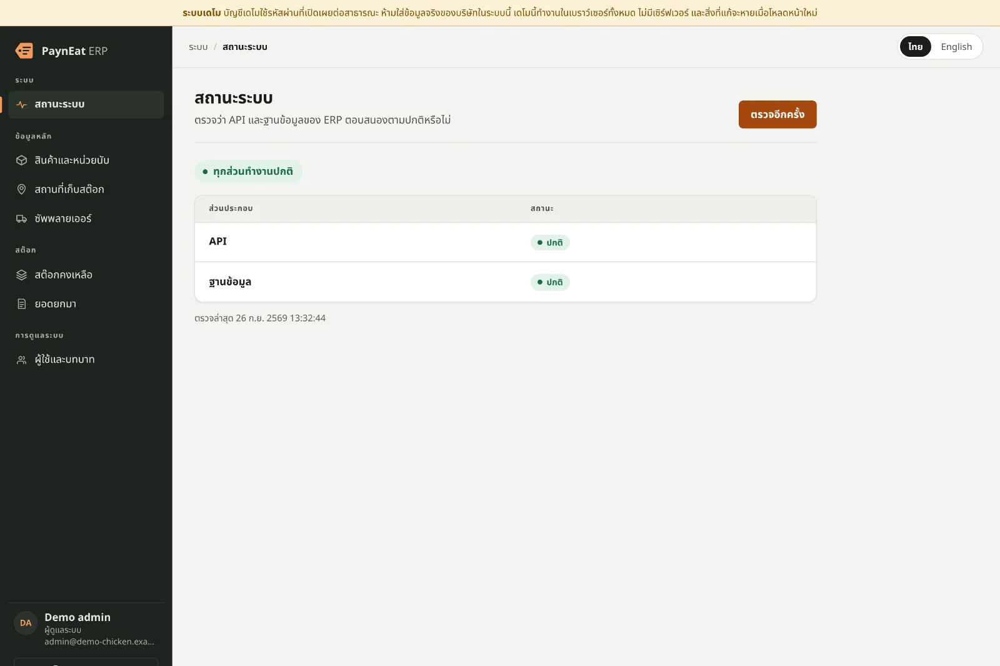
ลองเอง: เปิด “สถานะระบบ” ถ้าติดตั้งด้วย Docker ลองหยุดฐานข้อมูลแล้วกด “ตรวจอีกครั้ง” เปิดเดโม
ทุกอุปกรณ์
ที่โต๊ะทำงาน บนแท็บเล็ต ในกระเป๋า
ผู้จัดการสาขาอยู่หน้าร้าน ไม่ได้นั่งโต๊ะ และไม่ใช่ทุกคนอ่านภาษาอังกฤษ
console พอดีกับจอคอมพิวเตอร์ ย่อเมนูเหลือไอคอนบนแท็บเล็ต และเปลี่ยนทุกแถวของตารางเป็นการ์ดบนมือถือ ทั้งโหมดสว่างและมืด ทั้งไทยและอังกฤษ และลองได้ทั้งหมดตอนนี้: เดโมสาธารณะรันกฎของ backend เองในเบราว์เซอร์ของคุณ ไม่มีเซิร์ฟเวอร์
- console เดียวคอมพิวเตอร์ แท็บเล็ต และมือถือ
- สว่างและมืดตามการตั้งค่าของเครื่อง
- ไทยและอังกฤษคลิกเดียว เบราว์เซอร์จำไว้ให้
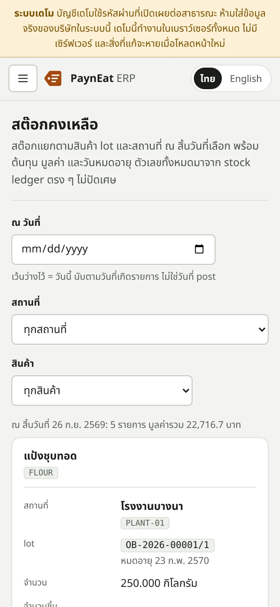
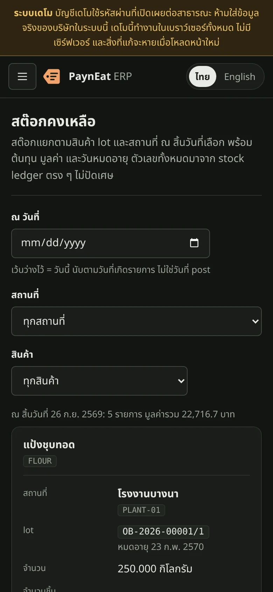
ลองเอง: เปิดเดโมบนมือถือของคุณ เปิดเดโม
แผนงาน
สิ่งที่กำลังจะมา
สร้างแบบเปิดเผยทีละ GitHub issue ทั้งหมดนี้ยังไม่อยู่ในเดโม
- #8การปรับปรุงสต๊อกพร้อมการแยกหน้าที่กำลังทำ
- #9สัญญาการเชื่อมต่อ POS และการลงทะเบียน POSวางแผนไว้
- #10ใบสั่งซื้อพร้อมเกณฑ์วงเงินที่ต้องอนุมัติวางแผนไว้
- #11ใบรับสินค้าพร้อมการตรวจรับและ lotวางแผนไว้
- #13ใบสั่งผลิต: yield ที่วัดจริงและผังความสัมพันธ์ lotวางแผนไว้
- #14ใบโอนผ่านระหว่างขนส่งวางแผนไว้
- #23การย้อนรอยและรายงาน recallวางแผนไว้
- #24การตรวจนับสต๊อกวางแผนไว้
โอเพนซอร์ส
ฟรีสำหรับหนึ่งเชน ตลอดไป
รุ่น Community เป็น Apache 2.0 และครบสำหรับหนึ่งเชน ไม่จำกัดผู้ใช้ สถานที่ หรือข้อมูล รุ่น Enterprise แบบเสียเงินสำหรับขนาดใหญ่และข้อกำหนดเฉพาะเริ่มหลังรุ่นแรก ความปลอดภัยของอาหาร ความถูกต้องของข้อมูล ความปลอดภัยพื้นฐาน การเข้าถึงข้อมูลของตัวเอง และทางอัปเกรด ไม่เคยถูกกั้นด้วยค่าใช้จ่าย